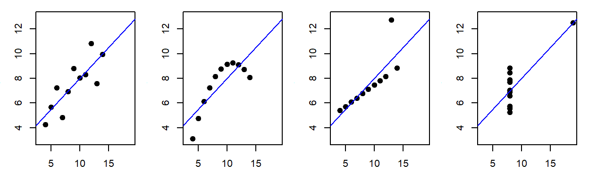

1 EDA
1.1 What is Exploratory Data Analysis (EDA)?
Traditional data analysis often follows a rigid, linear process—starting with data collection and ending with a statistical test or model. However, this approach can be misleading, as it assumes the data conforms to the assumptions of statistical procedures.
Consider the following example: four different datasets yield identical regression results despite being fundamentally distinct.
This is Francis Anscombe’s famous quartet, designed to highlight the critical role of data visualization. While the first dataset is suitable for linear regression, the second reveals a nonlinear relationship, and the third and fourth demonstrate the disproportionate influence of outliers. Without visualization, these insights would be lost!
EDA helps uncover hidden structures, patterns, and anomalies in data—insights that might otherwise go unnoticed. It is not merely a precursor to statistical testing but a crucial step in forming meaningful hypotheses. In some cases, EDA may reveal that no formal statistical test is appropriate or that conventional tools make unrealistic assumptions about the data. A robust analysis workflow must prioritize exploration and visualization before drawing conclusions.
“Exploratory data analysis is an attitude, a flexibility, and a reliance on display, NOT a bundle of techniques.”
–John Tukey
John Tukey is credited with having coined the term Exploratory Data Analysis and with having written the first comprehensive book on that subject (Tukey, 19771). The book is still very much relevant today and several of the techniques highlighted in the book will be covered in this course.
1.2 The role of graphics in EDA
Effective data visualization is central to exploratory data analysis. Graphical tools help uncover patterns, relationships, and anomalies without imposing a predefined narrative. A key goal of this course is to develop the skills necessary to construct visualizations that allow the data to speak for itself.
“Visualization is critical to data analysis. It provides a front line of attack, revealing intricate structure in data that cannot be absorbed in any other way.”
–William S. Cleveland
William Cleveland, a pioneer in statistical graphics, has extensively researched how cognitive science principles can improve data visualization. His book, Visualizing Data (Cleveland, 19932), remains a foundational work in the field, offering techniques specifically designed for data exploration. These differ from graphics intended for public presentation, which fall under information visualization (or infovis). While there is some overlap, infovis focuses more on storytelling and audience engagement, whereas statistical graphics prioritize unbiased data exploration.
This course will concentrate on statistical graphics rather than infovis. For a deeper discussion on the distinction between the two, see the 2013 article Infovis and Statistical Graphics: Different Goals, Different Looks3
1.3 We need a good data analysis environment
Effective EDA requires a flexible environment that supports a broad range of data manipulation and visualization techniques. A rigid, pre-packaged set of tools limits analytical possibilities—just as a writer would be constrained by a fixed set of sentences. Good writers need a rich vocabulary to express ideas freely, and data analysts need a versatile set of tools to uncover insights.
An ideal data analysis environment should offer powerful data manipulation, customizable visualization, and access to a wide range of statistical methods. Scripting languages like R provide this flexibility, allowing users to construct tailored analyses rather than relying on predefined procedures.
Additionally, the environment should be freely available and open source. Free access ensures that anyone with the necessary skills can engage in data analysis, regardless of budget constraints. Open-source software allows users to examine the code behind analytical methods, providing transparency when deeper insights into implementation are needed. While not all researchers may have programming expertise, those with the right skills are often accessible, even at a modest cost. Moreover, open-source tools can be adapted for different platforms and operating systems ensuring broad accessibility with minimal technical adjustments.
1.3.1 The workhorse: R
R is an open source data analysis and visualization programming environment whose roots go back to the S programming language developed at Bell Laboratories in the 1970’s by John Chambers. R will be used almost exclusively in this course.
1.3.2 The friendly interface: RStudio
RStudio is an integrated development environment (IDE) to R. An IDE provides a user with an interface to a programming environment (like R) by including features such as a source code editor (with colored syntax). RStudio is not needed to use R (which has its own IDE environment–albeit not as nice as RStudio’s), but it makes for a smoother R experience. RStudio is an open source software, but unlike R, it’s maintained by a private entity which also distributes a commercial version of RStudio for businesses or individuals needing customer support.
1.4 Data manipulation
Before data can be visualized, it must first be structured in a format suitable for analysis. When working with just two variables, minimal preparation may be needed. However, real-world datasets are often messy, containing dozens of variables, missing values, and erroneous entries that require careful manipulation, subsetting, and reshaping. Performing such tasks in a point-and-click spreadsheet environment can be cumbersome and prone to clerical errors.
R provides a powerful and reproducible approach to data manipulation through packages like dplyr and tidyr. Unlike spreadsheets, R’s scripting environment allows users to document each step of the process clearly and unambiguously. This transparency makes it easier to review, debug, and reproduce data transformations—something nearly impossible when relying on undocumented point-and-click operations.
1.5 Reproducible analysis
Reproducibility is a fundamental principle of the scientific method. In data analysis, ensuring that results can be consistently recreated is essential for credibility. However, workflows conducted in a point-and-click spreadsheet environment are difficult to reproduce. Unless every action—every click, copy, and paste—is meticulously documented, there is no guarantee that the same steps will yield the same results. Even with thorough documentation, verifying that the analyst followed the exact procedures is nearly impossible without a recorded session.
Reproducibility extends beyond data collection and methodology—it encompasses the entire analytical workflow, including data processing, statistical tests, and output generation. Yet, in many technical reports and peer-reviewed publications, only the final results are shared, leaving readers with no insight into the actual analytical process. Without access to the full workflow, potential errors—whether clerical, technical, or theoretical—may go unnoticed. Ensuring reproducibility not only reduces errors but also strengthens the integrity and reliability of scientific findings.
“… a recent survey of 18 quantitative papers published in Nature Genetics in the past two years found reproducibility was not achievable even in principle for 10.”
–Keith A. Baggerly & Kevin R. Coombes4
Unfortunately, examples of irreproducible research are all too common. A striking example was reported by the New York Times in an article titled How Bright Promise in Cancer Testing Fell Apart. In 2006,researchers at Duke University published a groundbreaking study in Nature Medicine, claiming that genomic tests could identify the most effective chemotherapy for cancer patients. This was hailed as a major breakthrough—until independent statisticians, Dr. Baggerly and Dr. Coombes, attempted to replicate the findings. Instead of confirmation, they uncovered fundamental errors, including gene mislabeling and flawed experimental designs. The original authors had not shared their analytical workflow, forcing the statisticians to reconstruct the process from scattered data and undocumented methods. Five years later, in 2011, Nature retracted the paper after determining that key experiments could not be reproduced
Recognizing such risks, many journals now require or strongly encourage authors to “make materials, data and associated protocols promptly available to readers without undue qualifications” (Nature, 2014). While sharing raw data is relatively easy, making an analytical workflow transparent is far more challenging—especially when analyses involve multiple software tools and undocumented point-and-click procedures. The ideal solution is a fully scripted, human-readable workflow that traces every step, from data import to the final figures and tables used in a publication. This approach not only eliminates clerical errors but also ensures that the analytical process is fully transparent and reproducible.
1.6 Creating dynamic documents using R Markdown
One common source of error in research reports and publications is maintaining consistency between the analysis and the final write-up. Typically, statistical plots are saved as image files and manually inserted into documents. However, as figures go through multiple iterations, different versions accumulate, increasing the risk of embedding outdated or incorrect visuals. The same issue arises with data tables and statistical summaries generated across various software tools—without careful tracking, researchers can easily misplace, overwrite, or mislabel key results. Managing this growing web of files and directories adds complexity and increases the likelihood of an irreproducible analysis.
Using a scripting environment, like R, improves reproducibility but does not completely eliminate the risk of mismatched figures or outdated statistical summaries in a report. A more robust solution is to integrate the data analysis and document creation process into a single workflow—an approach known as dynamic document generation.
In this course, we will use R Markdown, an authoring tool that embeds R code directly into documents. This ensures that figures, tables, and statistical summaries are automatically updated whenever the underlying data or analysis changes. In fact, this course website itself was entirely generated using R Markdown! You can view this course’s R Markdown files on the author’s GitHub repository.
Tukey, John W. Exploratory Data Analysis. 1977. Addison-Wesley.↩︎
Cleveland, William S. Visualizing Data. 1993. Hobart Press.↩︎
Gelman A. and Unwin A. Infovis and Statistical Graphics: Different Goals, Different Looks Journal of Computational and Graphical Statistics. Vol 22, no 1, 2013.↩︎
Baggerly, Keith A. and Coombes, Kevin R. Deriving Chemosensitivity from Cell Lines: Forensic Bioinformatics and Reproducible Research in High-Throughput Biology. The Annals of Applied Statistics, vol.3, no.4, pp. 1309-1334. 2009.↩︎